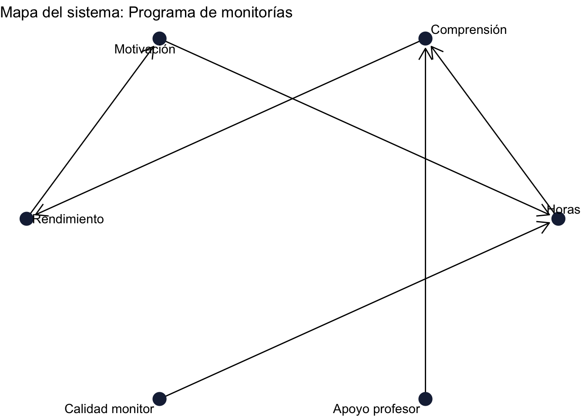

17 Participatory Systems Mapping (PSM)
17.1 A. Teoría y explicación
17.1.1 ¿Qué es Participatory Systems Mapping (PSM)?
El Participatory Systems Mapping (PSM) es una metodología participativa de modelación que permite representar de manera simplificada cómo funciona un sistema complejo a partir del conocimiento de sus propios actores. A través de talleres colaborativos, los participantes identifican variables clave (factores que pueden cambiar) y las relaciones causales entre ellas, construyendo un mapa que refleja su comprensión colectiva del problema. Este enfoque parte de la idea de que los sistemas sociales están compuestos por múltiples elementos interdependientes y dinámicas no lineales, que difícilmente pueden capturarse mediante análisis tradicionales. Por ello, el PSM no solo genera un producto visual, sino que también facilita procesos de aprendizaje colectivo, haciendo explícitos los mecanismos causales, las interacciones y los posibles bucles de retroalimentación dentro del sistema (United Nations Development Programme (UNDP) (n.d.); Barbrook-Johnson y Penn (2021)).
17.1.2 ¿Para qué sirve el PSM en evaluación?
El PSM es especialmente útil en evaluación cuando se trabaja con intervenciones que operan en contextos complejos y con múltiples actores, donde los resultados no dependen de una única causa sino de la interacción de diversos factores. Su principal aporte es permitir una comprensión integral del sistema, ayudando a identificar puntos críticos de intervención, posibles efectos indirectos y dinámicas que pueden potenciar o limitar el impacto de un programa. Además, al incorporar las perspectivas de distintos actores, el PSM fortalece la validez contextual del análisis y facilita la apropiación de los resultados. En este sentido, la metodología contribuye a estructurar mejor el problema evaluativo, priorizar variables relevantes y anticipar riesgos o efectos no deseados, aspectos clave en evaluaciones de impacto en entornos reales (United Nations Development Programme (UNDP) (n.d.); Barbrook-Johnson y Penn (2021)).
17.1.3 ¿Cómo se usa en evaluación de impacto?
En evaluación de impacto, el PSM se utiliza como una herramienta complementaria que permite hacer explícitos los mecanismos causales que conectan una intervención con sus resultados. A partir del mapa construido participativamente, es posible derivar o fortalecer la teoría de cambio, identificando rutas causales, actores clave y puntos donde el programa genera efectos. Asimismo, las variables del sistema pueden traducirse en indicadores medibles, y las relaciones causales en hipótesis evaluables que pueden ser contrastadas mediante métodos cuantitativos o cualitativos. El PSM también facilita la identificación de efectos indirectos, externalidades y dinámicas de retroalimentación, que suelen quedar fuera de enfoques más lineales. De esta manera, aunque no sustituye métodos de identificación causal, el PSM los complementa al proporcionar una comprensión más profunda del contexto y de los procesos a través de los cuales se genera el impacto (United Nations Development Programme (UNDP) (n.d.); Barbrook-Johnson y Penn (2021)).
NotaConceptos clave del enfoque sistémico
Actores: Individuos, grupos u organizaciones que forman parte del sistema y que influyen o son afectados por el problema o la intervención.
Variables/factores: Elementos del sistema que pueden cambiar (aumentar o disminuir) y que ayudan a explicar el comportamiento del problema.
Relaciones causales: Conexiones entre variables que indican cómo un cambio en una afecta a otra, generando efectos dentro del sistema.
Bucles de retroalimentación: Cadenas de relaciones causales que se cierran sobre sí mismas y pueden amplificar o estabilizar cambios en el sistema.
Efectos indirectos (spillovers): Consecuencias del programa que ocurren a través de otras variables o actores, no de forma directa.
17.1.4 Ejemplo aplicado: Programa de monitorías académicas
Vamos a construir un Participatory Systems Map (PSM) paso a paso usando el ejemplo de un programa de monitorías universitarias que busca mejorar el rendimiento académico de los estudiantes.
17.1.5 Contexto del programa
La universidad implementa un programa de monitorías académicas donde estudiantes con buen desempeño apoyan a sus compañeros en cursos difíciles. Queremos entender cómo funciona este sistema y qué factores influyen en los resultados del programa.
17.2 Paso 1: Identificar actores
- Estudiantes que reciben monitorías
- Estudiantes monitores
- Profesores
- Universidad (coordinación académica)
NotaTip:
Incluye actores que influyen directa o indirectamente en el programa.
17.3 Paso 2: Identificar variables/factores
- Horas de monitoría
- Motivación del estudiante
- Comprensión de los temas
- Rendimiento académico
- Carga académica
- Calidad de la monitoría
NotaTip:
Las variables deben poder cambiar (aumentar o disminuir).
17.4 Paso 3: Construir relaciones causales
- Horas de monitoría → Comprensión de los temas
- Comprensión → Rendimiento académico
- Motivación → Horas de monitoría
NotaTip:
Usa flechas para indicar dirección de la relación (qué causa qué).
17.5 Paso 4: Identificar bucles de retroalimentación
Ejemplo:
Rendimiento académico → Motivación → Horas de monitoría → Rendimiento académico
NotaTip:
Si puedes volver al punto de inicio siguiendo las flechas, tienes un bucle.
17.6 Paso 5: Identificar efectos indirectos (spillovers)
- Mejor rendimiento → mejor ambiente en clase
- Monitores → desarrollo de habilidades pedagógicas
- Estudiantes → motivan a otros compañeros
17.7 Paso 6: Construcción del mapa en R (diagrama de red)
Ahora representamos el sistema como una red de relaciones causales. En este tipo de diagramas:
- Cada nodo representa una variable del sistema
- Cada flecha representa una relación causal (qué afecta a qué)
Es importante notar que, aunque en pasos anteriores identificamos actores, el diagrama se construye principalmente con variables. Esto se debe a que en evaluación de impacto nos interesa entender qué cambia y cómo se generan los efectos, más que quién participa directamente.
Por ejemplo: - En lugar de incluir “monitor” como actor, usamos variables como “calidad de la monitoría” - En lugar de “profesor”, usamos “apoyo del profesor”
De esta manera, el mapa captura mejor los mecanismos causales del sistema.
NotaImportante
En PSM diferenciamos entre:
Actores: quiénes participan en el sistema (estudiantes, monitores, profesores) Variables: qué cambia dentro del sistema (motivación, horas, rendimiento)
Los mapas se construyen principalmente con variables, porque permiten representar relaciones causales y analizar cómo se generan los efectos.
17.7.1 ¿Cómo se lee este sistema?
Una vez construido el mapa, el siguiente paso es traducirlo a elementos útiles para la evaluación de impacto. El PSM no es solo un diagrama: es una herramienta que nos permite estructurar la lógica del programa y definir qué medir.
Podemos hacer tres conversiones clave:
- De mapa a teoría de cambio: el mapa nos muestra las rutas causales a través de las cuales el programa genera resultados.
- De variables a indicadores: cada variable del sistema puede convertirse en algo que podemos medir.
- De relaciones a hipótesis: cada flecha representa una relación que podemos poner a prueba empíricamente.
17.8 Traducción del mapa a elementos de evaluación
| Elemento del mapa | Tipo | Indicador sugerido | Hipótesis |
|---|---|---|---|
| Horas de monitoría → Comprensión | Relación causal | Número de horas de monitoría por estudiante | Más horas de monitoría aumentan la comprensión |
| Comprensión → Rendimiento académico | Relación causal | Resultados en pruebas o evaluaciones | Mayor comprensión mejora el rendimiento académico |
| Motivación → Horas de monitoría | Relación causal | Escalas de motivación o asistencia | Mayor motivación incrementa la participación en monitorías |
| Calidad monitor → Horas de monitoría | Relación causal | Evaluación de calidad de la monitoría | Mejor calidad de la monitoría aumenta las horas efectivas |
| Apoyo profesor → Comprensión | Relación causal | Frecuencia de apoyo docente | Mayor apoyo del profesor mejora la comprensión |
17.9 ¿Cómo usar este mapa en una evaluación real?
El mapa de sistema no es el punto final del análisis, sino una herramienta para tomar decisiones en el diseño de la evaluación.
Primero, permite priorizar qué relaciones analizar, ya que no todas pueden ser evaluadas empíricamente. En la práctica, el evaluador debe enfocarse en los mecanismos más relevantes y en aquellos donde existe mayor incertidumbre.
Segundo, el mapa ayuda a seleccionar el método de evaluación más adecuado. Por ejemplo, si el mapa sugiere sesgo de selección, se pueden usar métodos como PSM; si hay datos en el tiempo, Diferencias en Diferencias; y si existe endogeneidad, Variables Instrumentales.
Finalmente, el PSM permite identificar efectos indirectos y dinámicas del sistema que no siempre son evidentes, lo que mejora la calidad del diseño de indicadores y la interpretación de resultados.
17.10 B. Limitaciones y riesgos
Aunque el Participatory Systems Mapping (PSM) es una herramienta poderosa para comprender sistemas complejos, también presenta limitaciones que es importante reconocer al momento de utilizarlo en evaluación de impacto.
En primer lugar, el PSM depende fuertemente de las percepciones de los participantes, lo que puede introducir sesgos. Los actores pueden tener información incompleta, intereses particulares o visiones parciales del sistema, lo que afecta la forma en que se construye el mapa. Como señalan United Nations Development Programme (UNDP) (n.d.), el resultado del ejercicio refleja la comprensión colectiva del sistema, no necesariamente su estructura “real”.
En segundo lugar, existe el riesgo de complejidad excesiva. A medida que se incorporan más variables y relaciones, el mapa puede volverse difícil de interpretar y poco útil para la toma de decisiones. Según Barbrook-Johnson y Penn (2021), uno de los principales retos del enfoque es equilibrar la riqueza del sistema con la claridad analítica, evitando mapas demasiado densos.
Otro desafío importante es la dificultad para priorizar. El PSM permite identificar múltiples rutas causales y efectos potenciales, pero no indica automáticamente cuáles son más relevantes o más factibles de evaluar. Esto implica que el evaluador debe tomar decisiones adicionales sobre qué relaciones estudiar, lo que introduce un componente subjetivo en el proceso.
Además, el PSM no permite identificar causalidad por sí solo. Aunque ayuda a formular hipótesis y a entender mecanismos, no sustituye métodos cuantitativos o diseños experimentales o cuasiexperimentales. En este sentido, debe entenderse como una herramienta complementaria dentro de un diseño de evaluación más amplio (United Nations Development Programme (UNDP) (n.d.)).
Finalmente, existe el riesgo de sobreinterpretación. Dado que el mapa tiene una representación visual clara y estructurada, puede generar una falsa sensación de precisión o certeza sobre las relaciones del sistema. Sin embargo, estas relaciones deben ser validadas empíricamente antes de extraer conclusiones robustas.
NotaIdea clave:
El valor del PSM no está en “probar” relaciones causales, sino en hacer explícitas las hipótesis, dinámicas y supuestos que luego pueden ser evaluados con otras herramientas.
17.11 C. Conclusiones y recomendaciones de uso
El Participatory Systems Mapping (PSM) es una herramienta valiosa para enriquecer la evaluación de impacto en contextos complejos. Su principal aporte no está en estimar efectos causales directamente, sino en mejorar la comprensión del sistema, hacer explícitos los mecanismos de cambio y orientar decisiones clave en el diseño de la evaluación.
A lo largo de la guía vimos que el PSM permite:
- Identificar variables relevantes y relaciones causales
- Construir o fortalecer la teoría de cambio
- Formular hipótesis evaluables
- Detectar efectos indirectos y dinámicas de retroalimentación
Sin embargo, su uso es más efectivo cuando se integra estratégicamente con otros enfoques.
17.11.1 Recomendaciones prácticas
Usar el PSM al inicio del proceso evaluativo
Permite estructurar el problema, identificar actores clave y definir qué medir antes de recolectar datos.Complementar con métodos cuantitativos o cualitativos
El mapa ayuda a formular hipótesis, pero estas deben ser contrastadas con evidencia empírica (por ejemplo, mediante diseños cuasiexperimentales o análisis cualitativos).Priorizar antes de medir
No todas las relaciones del mapa deben evaluarse. Es fundamental enfocarse en los mecanismos más relevantes para el objetivo del estudio.Validar el mapa con diferentes actores
Incluir múltiples perspectivas mejora la calidad del análisis y reduce sesgos individuales.Mantener el equilibrio entre complejidad y claridad
Un buen mapa no es el más detallado, sino el más útil para entender el sistema y tomar decisiones.
NotaMensaje final:
El PSM no reemplaza los métodos de evaluación de impacto, pero sí los fortalece. Permite pasar de preguntar “¿funciona el programa?” a entender “cómo, para quién y bajo qué condiciones funciona”.
17.12 Referencias
Angrist, Joshua D., and Jörn-Steffen Pischke. 2009. Mostly Harmless
Econometrics: An Empiricist’s Companion. Princeton University
Press.
Barbrook-Johnson, Peter, and Alexandra Penn. 2021. “Participatory
Systems Mapping for Complex Energy Policy Evaluation.”
Evaluation 27 (January): 57–79. https://doi.org/10.1177/1356389020976153.
Bernal, Raquel, and Ximena Peña. 2011. Guía Práctica Para La
Evaluación de Impacto. Ediciones Uniandes.
Better Evaluation. 2024. “Outcome Harvesting.” https://www.betterevaluation.org/methods-approaches/approaches/outcome-harvesting.
Earl, Sarah, Fred Carden, and Terry Smutylo. 2001. Outcome Mapping:
Building Learning and Reflection into Development Programs.
International Development Research Centre (IDRC). https://idl-bnc-idrc.dspacedirect.org/handle/10625/26981.
Gerber, Alan S., and Donald P. Green. 2012. Field Experiments:
Design, Analysis, and Interpretation. W. W. Norton.
Gertler, P., S. Martinez, P. Premand, L. Rawlings, and C. Vermeersch.
2016. Impact Evaluation in Practice. World Bank Publications.
Imbens, Guido W., and Donald B. Rubin. 2015. Causal Inference for
Statistics, Social, and Biomedical Sciences. Cambridge University
Press.
Jones, Harry, and Simon Hearn. 2009. Outcome Mapping: A Realistic
Alternative for Planning, Monitoring and Evaluation. Overseas
Development Institute (ODI). https://odi.org/en/publications/outcome-mapping-a-realistic-alternative-for-planning-monitoring-and-evaluation/.
Khandker, Shahidur R., Gayatri B. Koolwal, and Hussain A. Samad. 2009.
Handbook on Impact Evaluation: Quantitative Methods and
Practices. World Bank Publications.
Lee, David S., and Thomas Lemieux. 2010. “Regression Discontinuity
Designs in Economics.” Journal of Economic Literature 48
(2): 281–355.
Rosenbaum, Paul R., and Donald B. Rubin. 1983. “The Central Role
of the Propensity Score in Observational Studies for Causal
Effects.” Biometrika 70 (1): 41–55.
United Nations Development Programme (UNDP). n.d. Participatory
Systems Mapping. Https://erc.undp.org/methods-center/methods/evaluation-methods/participatory-systems-mapping.
Wilson-Grau, Ricardo, and Heather Britt. 2012. Outcome
Harvesting. Ford Foundation. https://usaidlearninglab.org/sites/default/files/resource/files/outome_harvesting_brief_final_2012-05-2-1.pdf.